오늘 (ref_1 왼쪽)
M1 범위. 다이얼·7일 점·남은 것·끝낸 N개·조용한 줄

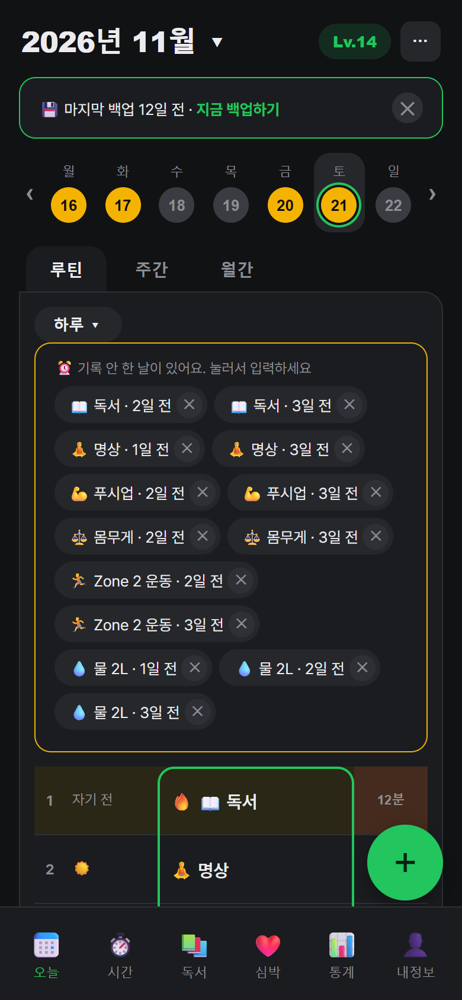
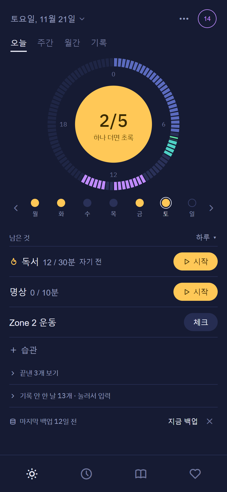
390×844, 가짜 데이터, 시계 고정 2026-11-21(토) 14:00 KST, 다크. 참조 = design/redesign/ref_*.html 의 폰 화면. 전 = ui-phase1-tokens, 후 = ui-phase2-night-dial.
M1 범위. 다이얼·7일 점·남은 것·끝낸 N개·조용한 줄


끝낸 습관은 도장과 함께 접힌 목록 안
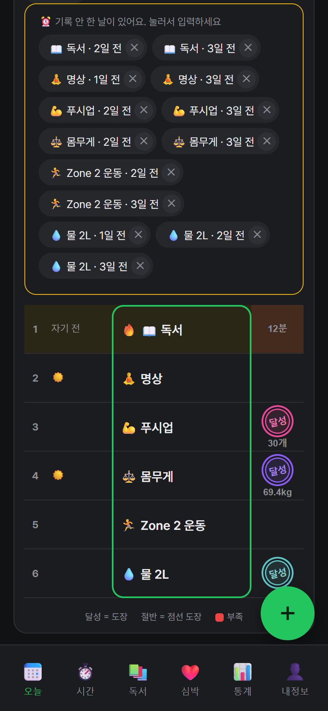

전: 아래 탭의 통계. 후: 오늘 › 기록 (같은 내용)
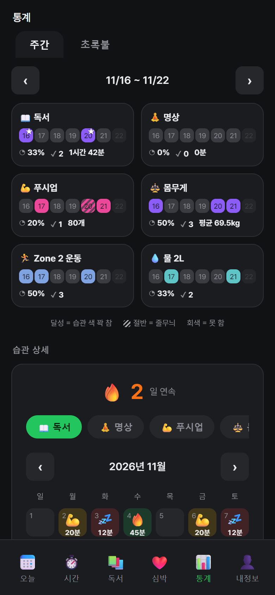

내용 그대로, 새 색만
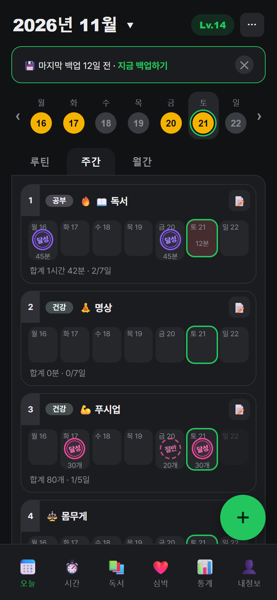

내용 그대로, 새 색만
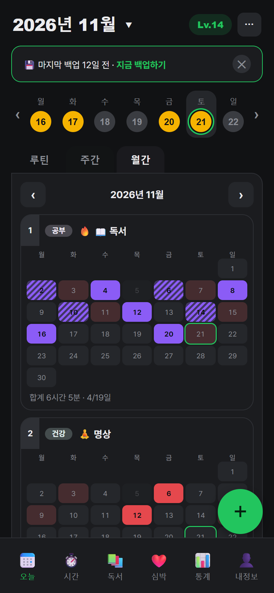
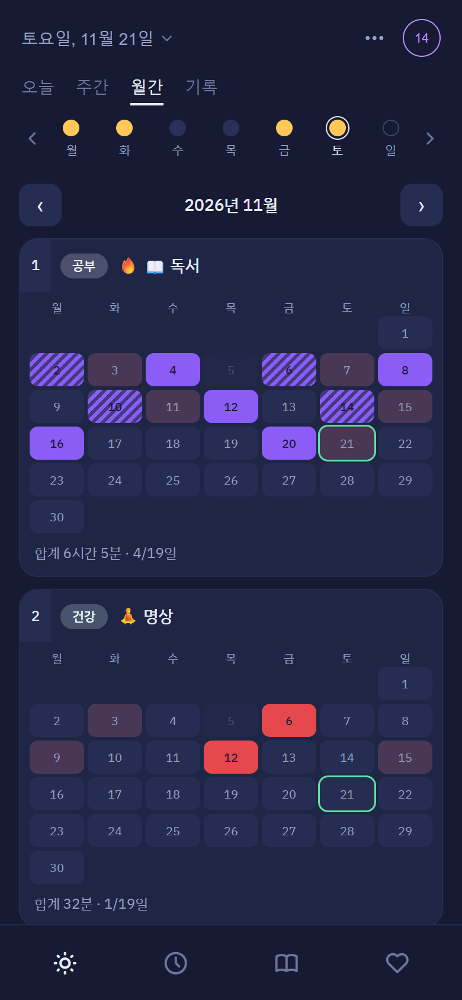
M4에서 모양을 바꿈
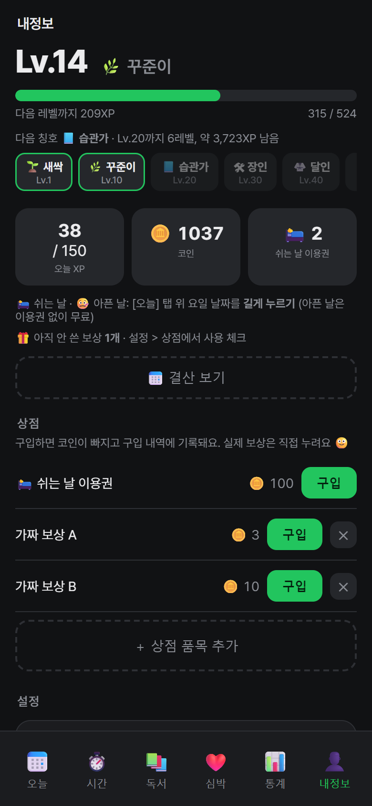

M2에서 다이얼로 바꿈. 지금은 새 색·아이콘 탭만

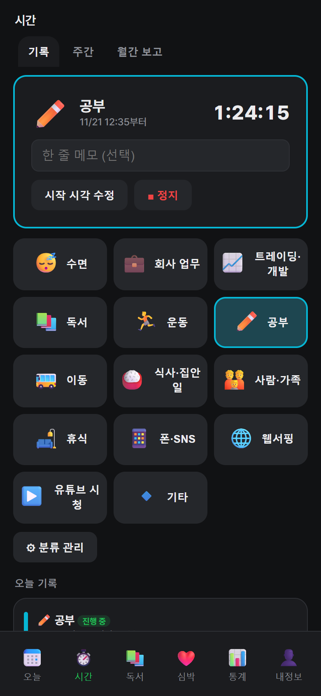
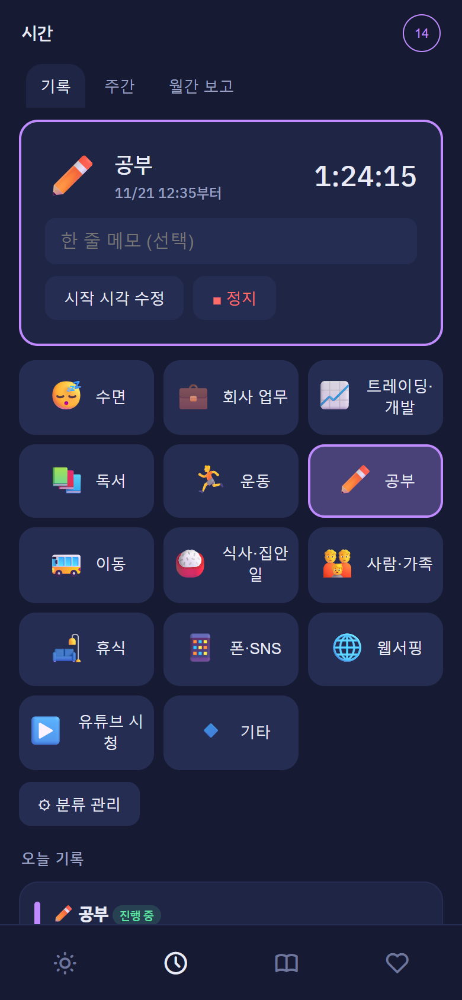
M2에서 존 게이지로 바꿈

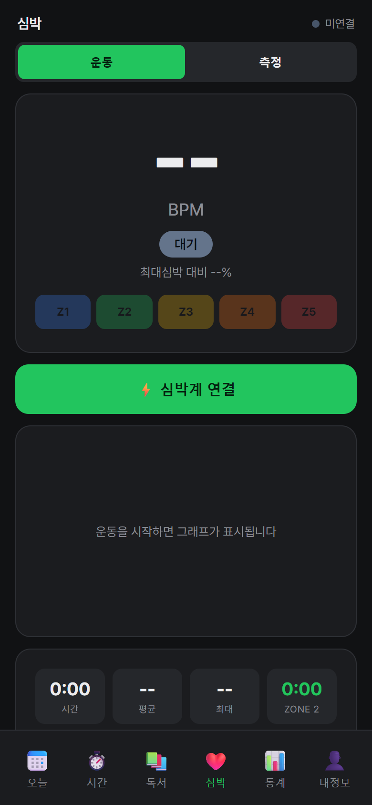
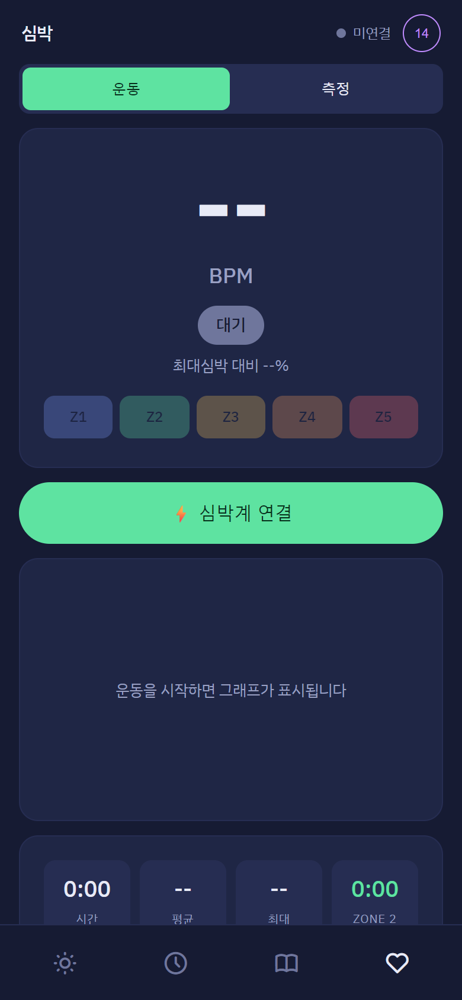
M3에서 바꿈. + 버튼은 M3까지 유지

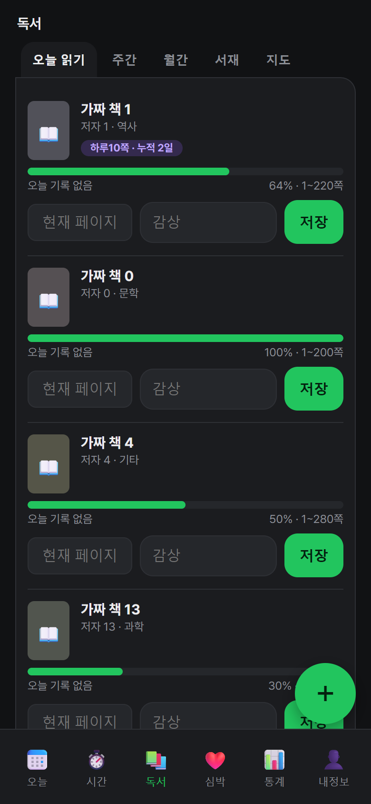

M4에서 바꿈 (시트 모서리 26px만 먼저)
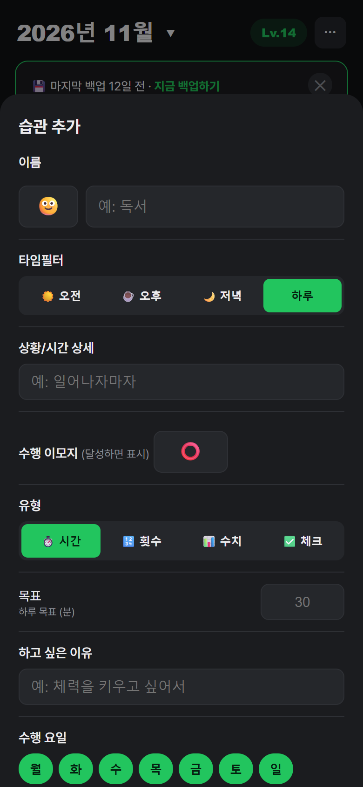

라이트는 M4에서 다듬음. 설정은 동작함
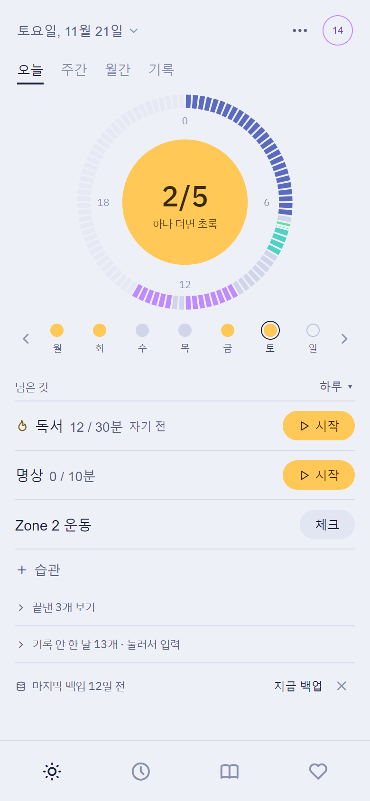